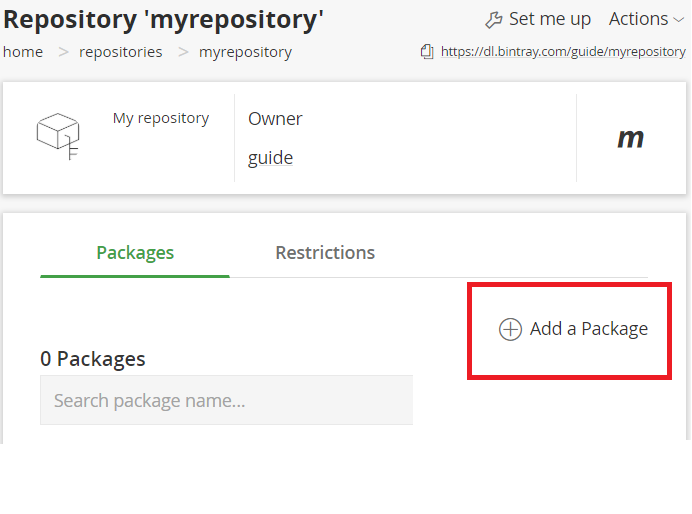

How to publish a Kotlin Multiplatform library to Bintray
Posted on the 30th of June, 2019
Prerequisites:
- Have created a Kotlin Multiplatform library using
File-> New -> Project.. -> Kotlin-> Multiplatform Libraryin IntellIJ (or a similiar IDE). - Have hosted your project on a git or similiar repository. This guide will use github.com as an example.
Step 1: set up your bintray account (if you haven't already)
- Go to https://bintray.com/signup/oss and sign up.
- Add a new repository :

- Under name put in the name of the repository. For example,
myrepository. UnderTypeputMaven, and fill in the rest as you wish.
I will assume you have the 'new look', so press the Go to New Look button at the top of
the screen if you have it.
- Add a package: 
- Under Name put in the name of the library. This should be a lower-case string. In this
guide we will make publish a library that provides a function that prints "Kotlin is awesome!",
so we will call it
kotlin-awesome-printer. - Put in your desired licenses in Licenses.
- In Version control put in where your code is stored. In our example, it will be https://github.com/natanfudge/KotlinAwesomePrinter.
The other fields are not necessary right (MAKE SURE) now as we will insert them later on using a different method.
- Click on Save
That is it for now on the Bintray side.